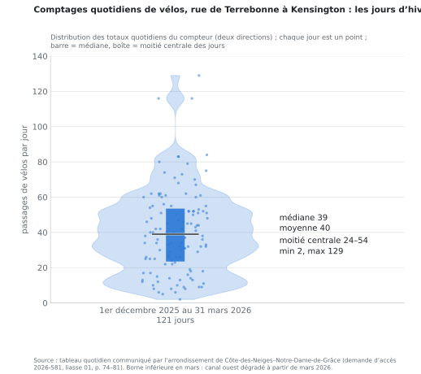

1Combien l'utilisent, mois par mois
135 276 passages la première année
26 juillet 2025 – 25 juillet 2026 · 371 par jour · deux directions
| Mois | Médiane / jour | Moyenne / jour | Véhicules motorisés / jour |
|---|
| août 2025 | 679 | 658 | 1 215 |
| sept. | 772 | 729 | 1 343 |
| oct. | 504 | 496 | 1 397 |
| nov. | 168 | 207 | 1 458 |
| déc. | 37 | 40 | 1 248 |
| janv. 2026 | 34 | 33 | 1 243 |
| févr. | 34 | 35 | 1 363 |
| mars | 52 | 54 | 1 396 |
| avr. | 235 | 275 | 1 523 |
| mai | 486 | 471 | 1 598 |
| juin | 750 | 747 | 1 451 |
| juil. | 690 | 678 | 1 312 |
- Hiver, du 1er décembre au 31 mars : 4 891 passages, 40 par jour, 121 jours, aucune journée sans vélo (minimum 2, maximum 129) ; généralement entre 25 et 75 (82 jours sur 121).
- Reste de l'année : 534 par jour. Circulation motorisée : 1 375 par jour sur l'année, contre 6 300 en 2022.
Source : tableau quotidien, demande d'accès 2026-581, liasse 01, p. 74–81. Borne inférieure : trois jours de panne en mai 2026.
2Les vitesses sur une rue à 30 km/h
35–39 km/h
V85 à King Edward, hiver – été (la vitesse sous laquelle roulent 85 % des voitures)
34–37 km/h
V85 à Draper, hiver – été
| Capteur | Saison | V85 (médiane des heures) | Voitures au-dessus de 30 km/h | Au-dessus de 40 km/h |
|---|
| King Edward | Hiver | 35 | 27 % | 11 % |
| King Edward | Été | 39 | 32 % | 16 % |
| Draper | Hiver | 34 | 34 % | 6 % |
| Draper | Été | 37 | 55 % | 5 % |
- Avec les pistes en place et une seule voie de circulation de 3,5 m, la vitesse du 85e percentile atteint ou dépasse déjà la limite de 30 km/h sur les deux tronçons, en toute saison.
- Environ une voiture sur trois à King Edward et une sur deux à Draper dépasse la limite ; environ une sur six à King Edward roule à plus de 40 km/h l'été.
Source : capteurs Telraam S2 à King Edward (à l'ouest de Cavendish) et à Draper (à l'est de Cavendish), données horaires, heures de clarté comptant au moins 20 voitures ; vitesses estimées par caméra ; hiver = déc.–mars, été = juin–août. Données jusqu'au 2026-05-04.
3Ce qui a été dit, et ce que montre le compteur
Dit au conseil, le 6 octobre 2026
99 %
« We go from 700 during the good months to 8. That's 8 passage, right? So that's 4 cyclists, right? »
Le 8 : six heures de pointe d'une seule journée, le 29 janvier 2025, par une caméra temporaire à Grand. Le 700 : un comptage de septembre (707) sur une autre diapositive, les quatre approches ; à méthode égale, les diapositives donnent 97–98 %.Le compteur de l'arrondissement
40 par jour
l'hiver, 534 par jour le reste de l'année : une baisse de
92 % par jour, pas de 99 %. Aucune journée d'hiver sous 2 vélos. Le conseiller lui-même a dit « 40 a day to 30 a day » à CBC (9 oct.).
Dit au conseil municipal, le 19 octobre 2026
3,6 %
« of overall cycling traffic » pendant les quatre mois d'hiver.
4 891 ÷ 135 276 = 3,6 % : la part de l'hiver dans les passages de l'année. Avec un usage identique chaque jour de l'année, cette formule donnerait encore 33 %.Compté par jour
7,6 %
L'usage hivernal par jour est 7,6 % de celui du reste de l'année (40 contre 534), 10,9 % de la moyenne annuelle. Le dénominateur du « 3,6 % » compte 244 jours qui ne sont pas l'hiver.

Citations vérifiées à l'écoute des enregistrements (webdiffusion du 6 oct. 0k_KZf9uxTk ; du 19 oct. rii3nUTuKRE, 41 min 44 s et 7 h 38 min 24 s ; CBC Daybreak, 9 oct., 7 min 03 s).
4La météo : l'hiver dernier, et la journée derrière le « 8 »
185 cm de neige
1er déc. 2025 – 31 mars 2026, aéroport Trudeau
24 jours ≥ 2,5 cm
3 jours ≥ 10 cm · 11 jours à −20 °C ou moins · minimum -25,1 °C
30 jours de chargement
dans le secteur de la piste (CDN-301) ; le volume de chargement de la saison a été le deuxième plus bas en onze ans
- Le 29 janvier 2025, la journée du « 8 » : 7,4 cm de neige, maximum -8,2 °C, minimum -14,7 °C, rafales à 40 km/h, sous un avertissement de temps hivernal d'Environnement Canada. La même caméra temporaire a relevé des voitures en baisse de 23 % et des piétons en baisse de 26 % sur les approches de Terrebonne par rapport à son comptage de novembre.
- Les capteurs citoyens ont tout de même compté ce jour-là 21 vélos à King Edward et 57 à Draper en heures de clarté, deux directions, contre 11 et 22 la veille.
- L'hiver dernier, 72 % des passages d'hiver vers l'est à Kensington ont eu lieu des jours sans contrainte de déneigement sur le stationnement.
Sources : données quotidiennes d'Environnement Canada, station 7025251 ; données ouvertes de la Ville sur le chargement de la neige (analyse d'exposition 2026-300) ; tableaux Miovision, 2026-581 liasse 01, p. 82–164 ; données horaires Telraam.
5La chronologie : décisions et demandes de l'administration actuelle
- 5 et 19 février 2024L'arrondissement (3 voix contre 2) et le conseil municipal (unanime) approuvent les voies protégées ; aménagées en mai–juin 2024 avec un financement de la Ville.
- 2 novembre 2025Élection municipale ; nouvelle administration d'arrondissement.
- 10 juin 2026Les ingénieurs de l'arrondissement écrivent que l'objectif des élus est de redonner la bande de stationnement ; deux concepts déjà examinés à l'interne ; un avis « officiel, neutre et externe » souhaité.
- 17 juinLe Service de l'urbanisme et de la mobilité (SUM) répond : les options « présentent plusieurs compromis importants sur le plan de la sécurité, du confort des usagers vulnérables et de la cohérence du réseau cyclable » (résumé de l'arrondissement, 22 juin). Analyse refusée.
- 13 juilletAvis du Service de sécurité incendie (SIM) ; communiqué entièrement caviardé.
- 13 aoûtMandat écrit du cabinet de la mairesse : une piste bidirectionnelle permanente d'un côté, le stationnement rétabli de l'autre.
- 20 aoûtLa demande de services ajoute le retrait hivernal comme « mesure transitoire pour l'hiver 2026-2027 » (volet 1), avant le plan permanent (volet 2).
- 25–26 aoûtOffre d'EXP et bon de commande : 14 755 $, six semaines ; date de conseil fixée d'avance. La fermeture limitée aux opérations de déneigement figure parmi les scénarios.
- 3 sept. → 2 oct.Démarrage ; version préliminaire le 17 sept. ; note finale attendue le 2 oct.
- 6 octobreAllocution au conseil : « 99 % », « 8 … 4 cyclistes » ; « this is what we're going to propose » ; « it's going to be a test » ; des changements « before Christmas 2026 ».
- 9 octobreRéponse à la demande d'accès (508 pages ; trois documents clés refusés). Entrevue à CBC : « 40 a day to 30 a day » ; « at least 50 to 60 » places ; « for now … permanent ».
- 19 octobreConseil municipal : « 3 % » / « 3,6 % » ; « On n'a aucun problème à partager nos documents » ; Le Devoir : le cabinet de la mairesse écrit « d'avril à décembre » maintenu, « au moins 60 places ».
- 7 décembre 2026Vote du conseil d'arrondissement (18 h 30). Puis le conseil municipal (14–15 déc.), puis retour à l'arrondissement.
Sources : résolutions CA24 170018, CM24 0179 ; demande d'accès 2026-581 (liasse 01, p. 1–26) ; webdiffusions des conseils ; CBC Daybreak, 9 oct. ; Le Devoir, 19 oct. Documents et transcriptions : github.com/OpenMobilityData. Préparé à partir de documents publics pour les résidents de Côte-des-Neiges–Notre-Dame-de-Grâce ; chiffres reproductibles à partir des dépôts Terrebonne-access-requests (2026-581) et Terrebonne-telraam ; cette page est régénérée à partir des données par build_poster.py.